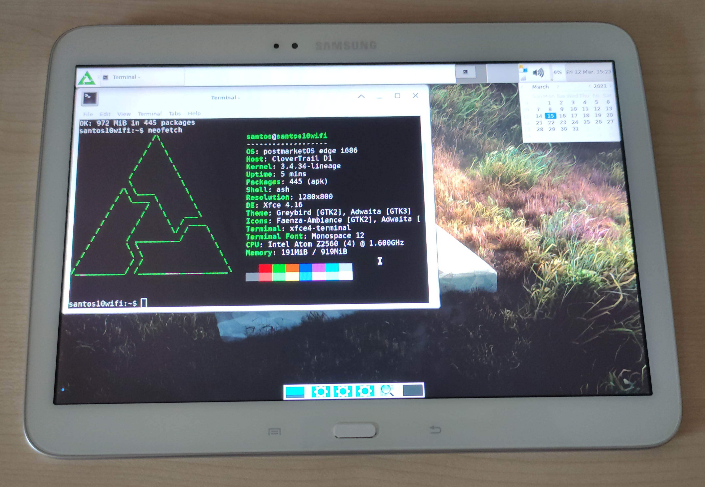

Samsung Galaxy Tab 3 10.1 Wi-Fi (samsung-santos10wifi)
|
 Samsung Galaxy Tab 3 10.1 Wi-Fi | |
| Manufacturer | Samsung |
|---|---|
| Name | Galaxy Tab 3 10.1 Wi-Fi |
| Codename | samsung-santos10wifi |
| Released | 2013 |
| Category | testing |
| Original software | Android 4.2.2 |
| postmarketOS kernel | 3.4.34 |
| Hardware | |
| Chipset | Intel Atom Z2560 |
| CPU | Dual-core 1.6 GHz |
| GPU | PowerVR SGX544MP2 |
| Display | 1280 x 800 TFT |
| Storage | 16/32 GB |
| Memory | 1 GB |
| Architecture | x86 |
{kind=link}
| USB Networking |
Works
|
|---|---|
| Flashing |
Works
|
| Touchscreen |
Works
|
| Display |
Works
|
| WiFi |
Works
|
| FDE | |
| Mainline | |
| Battery | |
| 3D Acceleration |
Broken
|
| Audio | |
| Bluetooth | |
| Camera | |
| GPS | |
| Mobile data | |
| SMS | |
| Calls | |
| USB OTG |
Works
|
| NFC | |
| Accelerometer | |
|---|---|
| Magnetometer | |
| Ambient Light | |
| Proximity | |
| Hall Effect | |
| Barometer | |
| Power Sensor | |
| Camera Flash | |
|---|---|
| Keyboard | |
| Touchpad | |
| USB-A | |
| HDMI/DP | |
| Ir TX | |
| Ir RX | |
| Stylus | |
| Haptics | |
| Ethernet | |
| FOSS bootloader | |
Contributors
Users owning this device
How to enter flash mode
Hold Power + Volume Up when the device is off to enter download mode.
Installation
| Note: Weston is broken. Only Xfce4 has been tested working with poor performance. |
Put device in download mode and then execute $ pmbootstrap flasher flash_kernel. Then reboot the device in download mode again and execute $ pmbootstrap flasher flash_rootfs. For a full tutorial, please see this post by Ungeskriptet at XDA-D: https://forum.xda-developers.com/t/native-linux-postmarketos-on-tab-3.4245067/post-84781947
UART
UART can be accessed with a special Micro-USB cable that puts a 619kΩ resistor between the ID and GND pin. The memory address for UART should be 0xffa28000.
Accessing S-Boot
Boot into download mode first, then press Volume Down to cancel and immediately hold Volume Up on the tablet and enter in your serial console after the screen goes black until you see the S-BOOT # prompt.
If you only want logs from the boot process, don't hold down enter in the serial console .
See also
- pmaports!2022 Initial merge request (santos10wifi)
- Device package
- Kernel package